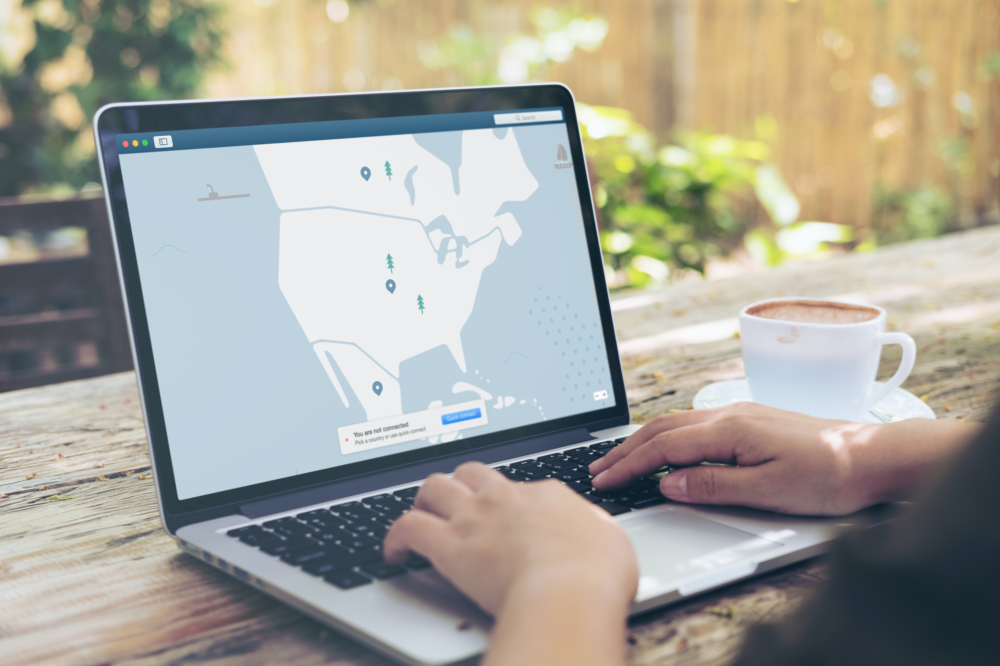

How to Set Up and Use a VPN

Introduction
A Virtual Private Network (VPN) is a crucial tool for enhancing online
privacy, security, and anonymity. It allows you to create a secure
connection to the internet, encrypting your data and routing it through
a remote server. Setting up and using a VPN involves several steps to
ensure optimal privacy and protection:
Step 1: Choose a Reliable VPN Provider
Research and select a reputable VPN provider that offers strong
encryption, a no-logs policy, and a wide server network. Consider
factors such as server locations, connection speed, and compatibility
with your devices and operating systems.
Step 2: Install VPN Software or App
Download and install the VPN software or app provided by your chosen
provider. Most VPNs offer apps for various devices, including desktops,
laptops, smartphones, and tablets. Follow the installation instructions
and log in with your VPN account credentials.
Step 3: Connect to a VPN Server
Launch the VPN app and connect to a server from the available options.
Choose a server location based on your desired purpose: for enhanced
security, choose a server in a privacy-friendly country; for accessing
geo-restricted content, select a server in the desired location.
Step 4: Configure VPN Settings
Explore the VPN app's settings and configure options such as protocol
selection (OpenVPN, IKEv2, etc.), automatic connection on startup, and
kill switch functionality. Enable features like split tunneling to route
only specific traffic through the VPN, optimizing performance.
Step 5: Verify IP and DNS Leak Protection
Test your VPN connection to ensure it effectively hides your IP address
and prevents DNS leaks. Use online tools or websites to verify that your
IP address and DNS requests are masked and routed through the VPN
server.
Step 6: Use Encrypted Browsing
With the VPN active, your internet traffic is encrypted, enhancing
privacy and security. Enjoy secure browsing, access geo-blocked content,
and prevent third parties from tracking your online activities, even on
public Wi-Fi networks.
Step 7: Secure File Sharing and Torrenting
If you engage in file sharing or torrenting, use the VPN to encrypt your
connections and mask your IP address. Ensure the VPN provider supports
P2P traffic and choose a server optimized for torrenting to maintain
both speed and security.
Step 8: Access Geo-Restricted Content
Connect to a server in a region where the desired content is accessible.
Whether it's streaming services, websites, or online platforms, a VPN
allows you to bypass geo-restrictions and enjoy content from around the
world.
Step 9: Regularly Update and Maintain
Keep your VPN software up to date by installing the latest updates and
patches provided by the VPN provider. Regularly review the VPN's privacy
policy and terms of service to ensure they align with your expectations.
Step 10: Disconnect and Securely Logout
When you're done using the VPN, disconnect from the server and securely
logout from the app. This ensures your internet traffic returns to its
default route and prevents any unauthorized access to your VPN account.
Conclusion
Setting up and using a VPN offers a robust solution for safeguarding
your online activities, protecting sensitive data, and maintaining
anonymity. By following these advanced steps, you can effectively
establish a secure VPN connection, optimize your online experience, and
take control of your digital privacy in an increasingly connected world.